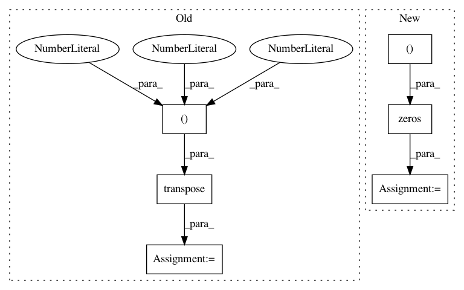

24bf232753b4b34b6d4164d5a647dd17d16348b2,example/convert_resnet/convert.py,,main,#,23
Before Change
graph_exec_data.save(OUTPUT_DIR)
with open(path.join(OUTPUT_DIR, "image_nhwc.json".format()), "w") as f:
image_nhwc = np.transpose(prepared_image, (1, 2, 0))
json.dump(image_nhwc.flatten().tolist(), f)
with open(path.join(OUTPUT_DIR, "fc6.json".format()), "w") as f:
json.dump(nn_output.data.tolist(), f)
After Change
parser.add_argument("--encoding")
args = parser.parse_args()
sample_image = np.zeros((224, 224, 3), dtype=np.uint8)//PIL.Image.open("")
if args.model == "vgg16":
link = chainer.links.model.vision.vgg.VGG16Layers()
prepared_image = chainer.links.model.vision.vgg.prepare(sample_image) // BGR, CHW
In pattern: SUPERPATTERN
Frequency: 3
Non-data size: 6
Instances
Project Name: mil-tokyo/webdnn
Commit Name: 24bf232753b4b34b6d4164d5a647dd17d16348b2
Time: 2017-05-23
Author: hidaka@mi.t.u-tokyo.ac.jp
File Name: example/convert_resnet/convert.py
Class Name:
Method Name: main
Project Name: geomstats/geomstats
Commit Name: 2e296adb05f62e4821c36b6f42b1470bdb10eaa6
Time: 2018-02-05
Author: ninamio78@gmail.com
File Name: geomstats/special_euclidean_group.py
Class Name: SpecialEuclideanGroup
Method Name: compose
Project Name: deepchem/deepchem
Commit Name: c96af58e6ab2f85626e51a331e8479da49329f0e
Time: 2017-01-18
Author: joegomes@stanford.edu
File Name: deepchem/models/tensorflow_models/__init__.py
Class Name: TensorflowClassifier
Method Name: predict_proba_on_batch